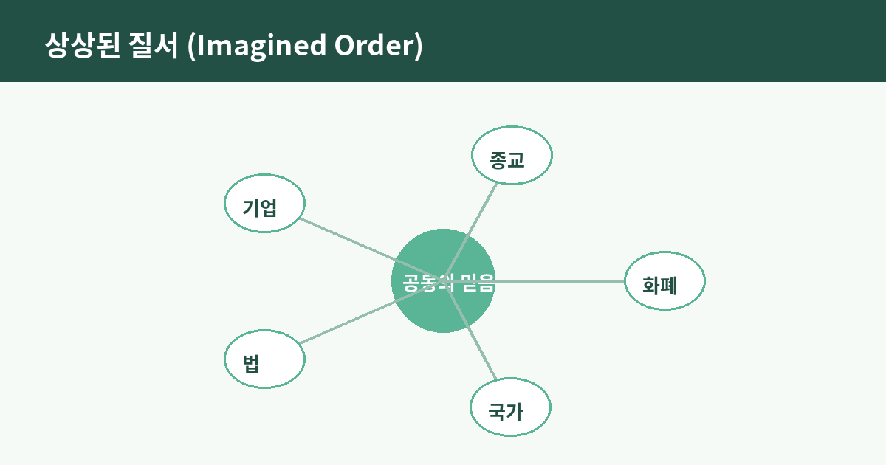

사피엔스, 낯선 사람과 협력하게 만든 상상의 힘

공항에서 처음 보는 사람에게 지갑 속 종이 몇 장을 내밀면, 그는 아무 의심 없이 커피 한 잔을 건넨다. 나는 이 아무렇지 않은 장면이 사실은 인류 역사에서 가장 기이한 사건 중 하나라고 생각한다. 서로 이름도, 얼굴도, 언어도 다른 두 사람이 종이 쪼가리 하나를 매개로 즉각 신뢰를 주고받는다. 유발 하라리의 『사피엔스』를 다시 펼치게 되는 것은, 이 당연해 보이는 장면 뒤에 숨은 질문 때문이다. 도대체 무엇이 낯선 사람들을 이렇게까지 협력하게 만들었을까.

네안데르탈인은 왜 졌는가
하라리가 던지는 첫 번째 통찰은 이렇다. 호모 사피엔스는 힘도, 두뇌 용량도 유일하게 뛰어난 종이 아니었다. 네안데르탈인은 더 강했고, 어떤 면에서는 더 컸다. 그런데도 사피엔스가 살아남고 지구를 뒤덮은 이유를, 하라리는 '허구를 믿는 능력'에서 찾는다. 침팬지 무리는 대략 수십 마리를 넘으면 서열 다툼으로 와해되지만, 인간은 수백만 명이 한 번도 만난 적 없는 채로 하나의 국가, 하나의 종교, 하나의 화폐 체계 안에서 협력한다. 이걸 가능하게 하는 것이 실재하지 않지만 모두가 함께 믿는 이야기, 즉 '상상된 질서'라는 것이다.
화폐, 국가, 기업이라는 공동의 환상
화폐는 그 자체로 먹을 수도, 입을 수도 없는 종이나 숫자에 불과하다. 그런데도 그것이 가치를 갖는 이유는 단 하나, 충분히 많은 사람이 동시에 그 가치를 믿기 때문이다. 국가도 마찬가지다. 국경선은 땅에 실제로 그어진 선이 아니라 지도와 조약과 법률 속에만 존재하는 합의다. 기업은 더 극단적이다. '삼성전자'라는 실체는 특정 건물도, 특정 인물도 아니다. 법인격이라는, 법이 발명한 허구적 인격일 뿐이다. 나는 이 대목에서 묘한 안도감과 불안을 동시에 느낀다. 우리 문명을 떠받치는 가장 단단해 보이는 제도들이 사실은 다 함께 계속 믿기로 한 이야기 위에 서 있다는 사실 때문이다.
이야기가 사라지면 제도도 사라진다
이 관점의 힘은 반대 방향에서 더 선명하게 드러난다. 소련이라는 나라는 어느 날 군대에 패해서 사라진 것이 아니다. 사람들이 그 이야기를 더 이상 믿지 않게 되면서, 하루아침에 지도에서 지워졌다. 화폐도 마찬가지로, 초인플레이션 상황에서 사람들이 그 종이의 가치를 믿지 않는 순간 그 즉시 휴지 조각이 된다. 제도와 화폐와 국가는 물리 법칙처럼 저 혼자 굳건한 것이 아니라, 매 순간 사람들의 집단적 믿음에 의해 다시 지탱되고 있는 셈이다. 이 사실은 제도를 냉소하게 만들기보다, 오히려 그것이 얼마나 정교하게 설계되고 계속 관리되어야 하는 것인지를 깨닫게 한다.
상상력은 감옥이자 사다리다
여기서 나는 하라리의 통찰을 내 나름대로 한 걸음 더 밀어붙이고 싶어진다. 상상된 질서는 우리를 자유롭게도, 가두기도 한다. 신분제라는 것도 결국 사람들이 함께 믿었던 상상된 질서였고, 그 믿음이 깨지면서 비로소 개인의 자유라는 새로운 상상된 질서가 그 자리를 대신했다. 즉 우리가 오늘 당연하게 누리는 자유·인권·평등 같은 개념들도, 자연 속에 원래 있던 것이 아니라 인류가 어느 시점에 합의해서 함께 믿기 시작한 또 하나의 이야기다. 다만 이번 이야기는 이전의 것들보다 더 많은 사람에게 더 나은 삶을 약속하는 이야기라는 점이 다를 뿐이다.
다시 지갑을 열며
이제 커피값을 치르며 지갑을 열 때, 나는 예전과는 조금 다른 감각으로 그 종이를 본다. 그것은 단순한 지불 수단이 아니라, 한 번도 만난 적 없는 수십억 명이 매일 갱신하고 있는 거대한 합의의 조각이다. 이 합의가 어떻게 시작되었고 왜 유지되는지를 아는 것은, 그저 흥미로운 역사 상식이 아니라 지금 우리가 속한 사회의 제도들을 조금 더 겸손하게, 그리고 조금 더 진지하게 대하게 만드는 일이라고 생각한다.